Development journey: "Clawd: Mannered Prose", a 15-second cartoon made only with code
How to read this document. It describes one build from three sessions. It is written for two readers: you, who directed the work and saw only the final messages, and a future agent that must resume or audit the work. Each claim has a tag:
verified I measured it or looked at it. not verified I could not check it, and I say why. reconstructed The session that did this work ended before this document. I rebuilt the facts from the saved terminal text in .ignore/cc1_cartoon.txt and .ignore/cc2_cartoon.txt, and from files on disk.
The build session (session 3) is documented from the live transcript. It includes each error message word for word.
1. The brief
You gave the brief in two parts. The first part came from the prompt in the reference YouTube video (dT8OM3cqrMo, "I Asked Claude OPUS 5.5 to Make a Cartoon From Scratch... and It Did!"). The second part was your own storyboard, my_storyboard.txt. The session 1 prompt, verbatim:
Create a 15-second animated video starring the Claude Code mascot, Clawd—the small orange pixel-style character. Use an accurate reference for its appearance. Build it from scratch using p5.js and p5.brush, with a warm watercolor background and playful cartoon movement. The storyboard is in @my_storyboard.txt. Do not create the video yet. do all needed preflight checks. make sure everything is ready. ask me if any question
The storyboard has 5 beats with fixed times: 0–3 s "The innocent question", 3–7 s "The Mannered Prose Machine awakens", 7–10 s "Concision makes everything worse", 10–13 s "Anthropic intervenes", 13–15 s "Recovery… almost". It ends with the text "Be direct." and a cut to black. my_prompts.txt adds the output rules from the reference prompt: 1920×1080, 24 fps, exactly 15 seconds, MP4, Puppeteer and FFmpeg, "inspect sample frames and the finished video; fix any visual errors", "deliver the MP4 and runnable source". It also says "you also have access to pixabay api. the key is in the env" and "music is all code as well".
In session 3 you asked "can you finish all the 8 phases in one go", and then answered "A. one go". Option A meant three things: use the Clawd grid that I decoded by hand, do not stop at the 3 review checkpoints, and report everything at the end.
How I read the brief (choices I made without asking)
- "No captions or dialogue" in the reference prompt conflicts with a storyboard that is mostly text. I treated text that is inside the scene as allowed: the laptop screen, speech bubbles, the system card, words painted on objects. I did not add subtitles.
- "Clawd sits at the laptop": Clawd stands to the right of the laptop and faces it. A 264-px-wide pixel block cannot sit on a chair and still read as Clawd.
- "The user": a round blue face with dot eyes in the upper left. It is not a real person.
- All the prose that the storyboard does not give I wrote myself: the two wedge sentences, the 470-character paragraph, the bullet text "And that matters.", the label "PROSE-O-MATIC", the header "SYSTEM MESSAGE" and the prompt label "claude".
2. The whole process on one page
No AI model generates pixels in this project. The model writes a program. The program draws 360 still pictures. FFmpeg joins them into a video. A second program calculates the sound as a list of 720,000 numbers. The model then looks at sample pictures, finds errors, and changes the program.
3. Three sessions: timeline
The work used three Claude Code sessions in the same folder on 2026-09-24. You ran /clear between sessions 2 and 3. HANDOFF.md carried the state across the clear.
4. Session 1: preflight and your 3 decisions reconstructed
Session 1 made no video. It checked that each tool works on your machine, and it found the facts that the design depends on.
| Check | Result |
|---|---|
| Node, npm | Node v22.22.0, npm 9.9.4 |
| FFmpeg | 7.1.1 "essentials" build from WinGet. It is not on the Git Bash PATH. The scripts call it by its absolute path in the WinGet links folder. This fact is saved in the agent's memory. |
| Chrome + puppeteer-core 24 | WebGL runs on the GPU through ANGLE and Direct3D 11 with --use-angle=d3d11 --enable-webgl --ignore-gpu-blocklist. puppeteer-core uses your installed Chrome, so it does not download its own browser. |
| p5 2.2 + p5.brush 2.2.3 | A smoke test painted one watercolor frame at 1920×1080 in 1,777 ms (this time includes the page load). The frame is plan-smoke-frame.png. |
| Clawd colour | A search of the local Claude Code binary claude.exe (240 MB) found clawd_body:"rgb(215,119,87)" 4 times, and clawd_background:"rgb(0,0,0)". In hex, the body colour is #D77757. |
| Clawd shape | The same binary holds the block pieces █████, ▘▘ ▝▝ and ▝▝ ▝▝ as UTF-16 text at byte 99,320,476. The full head row ▐▛███▜▌ was not found as one string. The full 3-line logo came from the reference repo aadil6971/clawd-video. |
| Pixabay | No Pixabay key in the process, User or Machine environment. The API has no audio endpoint: https://pixabay.com/api/music/ returned HTTP 404, and the API docs list only /api/ and /api/videos/. |
Two errors happened during the binary search. Both were Windows encoding problems:
UnicodeEncodeError: 'charmap' codec can't encode characters in position 0-4: character maps to <undefined>
Python printed to a cp1252 console. The fix was PYTHONIOENCODING=utf-8. Then a regex over the raw bytes failed on the mixed binary text, and the search changed to a plain UTF-16-LE byte search.
Your 3 decisions (asked with a multiple-choice question)
| Question | Options offered | Your choice | Why the others lost |
|---|---|---|---|
| Audio source | All-code synth · you supply audio files · no audio | All-code synth | Pixabay has no audio API and no key was set. Your note "music is all code as well" also asked for code. |
| Beat 2 density: about 11 actions in 4 s, so about 0.36 s each | Keep 15 s and overlap the gags · extend to about 25 s · keep 15 s and cut gags | Keep 15 s, overlap | The output rule says exactly 15 seconds. Cutting gags loses storyboard content. |
| Engine | Write from scratch · reuse the reference repo engine | From scratch | Your prompt says "from scratch". The repo became a reference for the Clawd grid and for its list of known bugs. No code was copied. |
5. Session 2: the plan reconstructed
You asked for a detailed, step-by-step implementation plan that explains each tool. The result is implementation-plan.html (609 lines when first written, 57,732 bytes), with 12 sections. It set the architecture that session 3 then followed:
- Paint once, move many times. p5.brush is random and slow. If it painted the wall again for each frame, the edges would move 24 times each second ("boiling"). So each item is painted one time and kept as an image.
- Each frame is a pure function of time. Frame i shows t = i/24 s and depends on nothing else.
- Two canvases. A hidden WebGL canvas for p5.brush painting, and a visible 2D canvas for each frame.
- One cue file,
cues.json, that the picture and the sound both read. - 8 phases with checkpoints.
The advisor (Fable 5.1) reviewed the plan in session 2. The saved terminal text shows 2 or 3 calls; two lines may be one call. You then asked me to publish it as a private artifact (version 1, icon "film"). Then you ran /handoff-after-clear, which wrote HANDOFF.md (41 lines).
6. Session 3: the build, phase by phase
Session 3 started from a clear context. It read HANDOFF.md, TASKS.md, README.txt, my_prompts.txt and my_storyboard.txt, then re-checked the tools. Before the build it found 3 small gaps and told you about them:
- The latest p5 on npm was 2.3.3, but the smoke test used 2.2. The install command in the handoff (
p5@^2.2) would get 2.3.3. I pinnedp5@~2.2, which installed 2.2.3. - The Clawd head row was still not checked against a live terminal.
- The status bar showed "Update installed · Restart to update". A restart would not affect the build.
You chose option A (one run). Then I extracted the plan from the HTML into plain text (39,638 characters) and read all of it before I wrote any code.
Phase 1: pipeline proof
I wrote render.mjs: a Node http server on port 8765, Chrome through puppeteer-core, a loop of page.evaluate(renderFrame(i)) plus a screenshot for i = 0…359, then FFmpeg and ffprobe. The test scene drew one watercolor rectangle and the text "frame N".
assets painted in 1856 ms 360 frames, 120 ms per frame stream|codec_name=h264|width=1920|height=1080|pix_fmt=yuv420p|r_frame_rate=24/1|duration=15.000000|nb_read_frames=360
verified The checkpoint passed on the first run: 360 frames, 24/1 fps, 1920×1080, 15.000 s. The log also showed [page] Failed to load resource: the server responded with a status of 404 (Not Found). I made the server log each 404 URL except favicon.ico. No other URL was ever logged, so the 404 is Chrome's automatic favicon request.
The first advisor call: 2 problems that would have cost a full repaint
I called the advisor after phase 1. It looked at the test frame and found that the upper-right part of the painted rectangle was nearly white, not paper-coloured. p5.brush mixes pigment with the canvas colour, and I had painted on white. Every prop would look chalky on the paper background. The fix was one line: paint on the paper colour #f3e6cf. It also warned that the Clawd orange would drift, because a watercolor fill averages lighter than its colour. So the body is a flat #D77757 fill with a texture on top in soft-light mode, and a check in code measures the mean colour. The same advice suggested a larger brush scale (3 → 6) and a byte-for-byte determinism check. I applied all of it.
Phase 2: paint the world
I wrote 23 sprite paintings. The first asset sheet showed pale, patchy colour, and some p5.brush marks that did not work (section 13). The second sheet was good. Painting all 23 sprites takes 7.5–11.6 s at the start of each render.
Phase 3: build Clawd
I wrote clawd.js and rendered a pose sheet with 8 poses. The colour check printed clawd mean rgb 215,119,87 (target 215,119,87). verified
Phase 4: animate the 5 beats
I wrote the timeline code for all 5 beats in one pass, about 600 lines. Then I rendered 6–12 stills for each beat, read them as one tiled image, and fixed what I saw before I went to the next beat. There were 9 still passes in total. Section 12 explains how this loop works.
Phase 5: sound
I wrote score.mjs (127 lines). It runs in 0.7 s. The first waveform showed that 5 thuds set the peak level and made the music quiet. I rebalanced the mix one time (section 11).
Phase 6 and 7: full render, check and fix
There were 5 full renders in session 3: the phase 1 test, a silent draft, the first render with audio, a render after the transition fixes, and a final render after the last pose fix. Section 13 lists every fix.
Phase 8: deliver
I deleted out/frames/ (360 PNG files), wrote README.md with the 3 run commands, added npm scripts, and updated TASKS.md and HANDOFF.md. I sent you the MP4 and the contact sheet.
7. How each asset is designed
An "asset" here is a sprite: an image that is painted one time and then moved, turned or stretched in each frame. All 23 sprites are defined in part 1 of scene.js, and paint.js paints them.
7.1 How one sprite is made
addSprite(name, w, h, paint, mask, bg)puts a job in a queue. Each job gets its own seed:1000 + index × 17.- p5 calls
draw()about 60 times each second. Each call clears the hidden 1920×1080 WebGL canvas to the job's background colour, callsrandomSeed(seed)andnoiseSeed(seed), and runs the job's paint function. - p5.brush does not show its paint until the end of
draw(). So the copy happens at the start of the nextdraw()call. This detail came from readingsrc/adapters/p5/addon.js: the flush happens in thepostdrawhook. - The copy uses a mask: the job's shape path, filled and then stroked 8 px wide. The painting is drawn with
source-in, so only the pixels inside the shape stay. The 8-px stroke keeps the ink outline, which sits on the edge of the shape. - When the queue is empty, the page loads
cues.json, waits for the Georgia and Consolas fonts, draws frame 0, and setswindow.READY = true. The renderer waits for that flag.
brush.seed(n). The README of the installed package says that in the p5 build, randomSeed() and noiseSeed() seed p5.brush automatically. brush.seed() belongs to the standalone build. I used the p5 functions. The byte-identical frame 0 across two renders confirms that the seeding works. verified7.2 The painting vocabulary
Every sprite uses 3 helpers from paint.js:
wc(color, alpha, bleed, texture, border): a flatbrush.washat opacity 170 for solid colour, plus abrush.fillon top for the watercolor bleed, the grain and the darker rim. The flat wash was added after the first asset sheet looked patchy.tex(...): watercolor only, no flat wash. It is used for overlay textures, smoke and window light.ink(color, weight): the p5.brush'pen'brush for outlines. It gives a slightly broken, hand-drawn line.
7.3 All 23 sprites
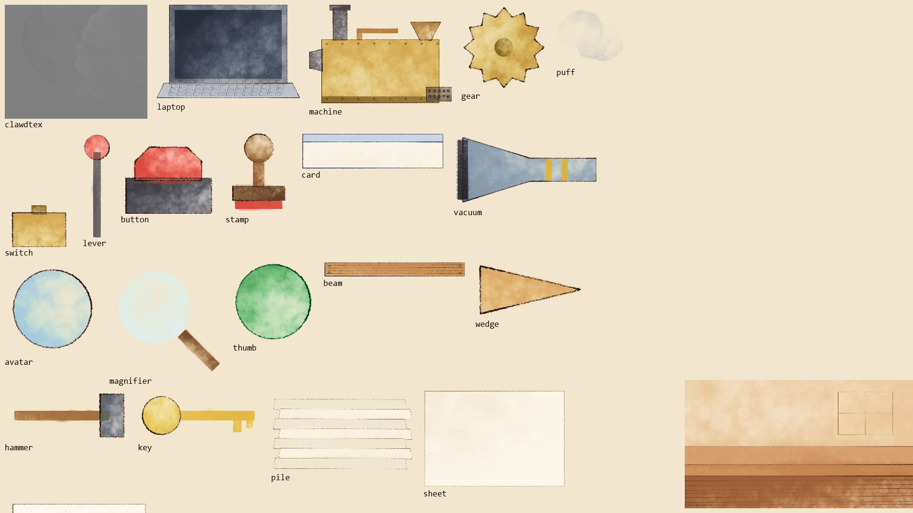
node render.mjs --sheet assets). The room is at the lower right, reduced. The grain texture is not shown.| Sprite | Size (px) | How it is painted | Where and when it appears |
|---|---|---|---|
room | 1920×1080 | Wall wash #e8c496, a pale window-light patch with a pen window frame, a darker wainscot band from y = 560, the desk top #c4834f (y 712–812), the desk front #9c5f37 with 7 lines of 2B pencil wood grain, and pen edge lines. | Every frame, first layer. No mask. |
grain | 1920×1080 | 9 large light circles with texture, painted on white. | Every frame, last layer, multiply at 35%. |
clawdtex | 300×240 | 6 grey circles on mid-grey #808080. | Inside Clawd's body, soft-light at 45%. Mid-grey keeps the mean colour at #D77757. |
laptop | 800×540 | Dark lid, darker screen #252a36, metal keyboard trapezoid, 3×14 pen key outlines. | 0–3.15 s and from 12.0 s. The screen text is drawn over it. |
machine | 900×640 | Brass body #cfa24a with 16 rivets, iron chimney, hopper, chute, pipe, and a 2×5 typewriter key block. | 3.05–7.05 s. It shakes from 4.0 s. |
gear | 180×180 | A 12-tooth polygon from gearPts(), with a hub. | 2 copies on the machine, turning in opposite directions. |
puff | 160×130 | 3 grey watercolor circles. | Chimney smoke, and the bursts at 3.0, 6.95 and 12.0 s. |
switch + lever | 180×300, 60×220 | A brass base, and a lever with a red knob. | 2.45–3.55 s. The lever turns about its base. |
button | 180×170 | A dark base and a red dome. | 7.55–8.85 s. It squashes on the slam. |
stamp | 140×170 | A wooden knob and a rubber base. | 8.45–8.9 s. It flies from Clawd to the paragraph and back. |
card | 1180×300 | A cream card with a blue header band. | 10.0–12.35 s. It drops from the top. |
vacuum | 620×320 | A steel funnel with a black mouth and 2 yellow bands. | 10.9–12.2 s and 14.12–14.6 s, tilted. |
avatar | 200×200 | A pale blue circle. The face is drawn in 2D. | Every frame. |
magnifier | 300×300 | A pale lens and a wooden handle. The rim is drawn in 2D. | 9.7–11.86 s. |
thumb | 170×170 | A green circle. The white thumb shape is drawn in 2D. | From 13.2 s. |
beam | 960×110 | A wooden plank with grain lines and 4 bolts. | Drops at 4.6 s. Sucked away at 11.05 s. |
wedge, hammer | 230×120, 260×110 | A wooden triangle, and a handle with a steel head. | 5.0–11.35 s. |
key | 260×110 | A gold key. | "THE REAL UNLOCK" tag, 7.0–11.15 s. |
pile | 900×520 | 7 offset sheets of paper. | Drops at 6.85 s, covers the machine, sucked away at 11.86 s. |
sheet | 840×580 | One cream sheet. | Holds the giant paragraph. It shrinks to 34% on CONCISE. |
bubble | 700×130 | A speech bubble with a tail. | The two user messages. It is stretched to fit the text. |
Items that are not sprites (drawn with Canvas 2D code in each frame)
All text, the em dashes (rounded bars), the SEAMS stitches, the "quietly" legs, the sparks and impact stars, the sweat drop, the "!" mark, the ghost bow tie, the glasses, the light rays, the siren wash, the vacuum hose, the suction lines, the speed lines and the vignette. They change shape or text in each frame, so a painted image would not help.
8. How Clawd is designed
8.1 From terminal characters to a pixel grid
The Claude Code terminal draws Clawd with block characters. Each character cell has 2×2 "quarters" that are on or off. A terminal cell is about twice as tall as it is wide, so a quarter is a tall rectangle. In the video, 1 quarter is 22×44 px.
The code (clawd.js) uses grid A: body columns 3–14 and rows 0–3 (264×176 px), eyes in row 1 at columns 5 and 12, arm nubs in row 2 at columns 1–2 and 15–16, legs in row 4 at columns 4, 6, 11 and 13. The origin is the centre of the feet, so squash and stretch keep the feet on the desk. Clawd is 264 px wide without the arms and 220 px tall.
▐▛███▛█ ▝▜██████▀ ▝▝ ▝▝I decoded it as grid B above. It is 13 quarters wide, the right eye is at column 13, and the legs are shifted. Also, the reference YouTube video's screen (
.ignore/Screenshot (2102).png) mentions "11×4 quadrant body". So there are 3 different descriptions. Possible explanations, none checked: the terminal logo changes between frames or versions, or the text copy from the terminal changed some characters. not verified A screenshot of the logo in your terminal would settle it. If grid B is correct, the change is about 6 numbers in clawd.js.8.2 How the body is drawn in each frame
- A soft shadow ellipse on the desk. It does not squash, and it shrinks when Clawd is in the air.
- Translate to the feet, rotate by
lean, scale bysx,sy. - The body and legs as one
Path2D, filled flat#D77757. - The arm nubs. Each nub turns about a pivot on the outer edge of the body. The reference repo lists a known bug: arms that turn about a point inside the body disappear into it. The nub grows longer as it lifts:
44 + 22·|sin(angle)|px, plus an optional extra. - The texture: clip to the body and draw
clawdtexinsoft-lightat 45%. - The eyes, in one of 8 modes.
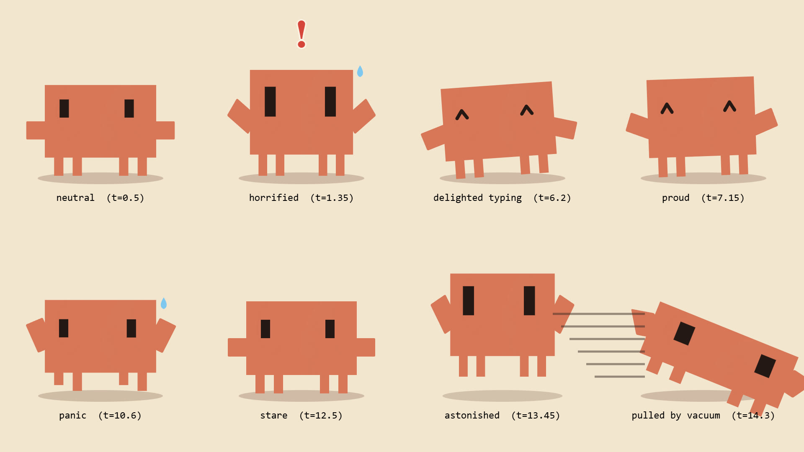
node render.mjs --sheet poses). Neutral, horrified, delighted typing, proud, panic, stare, astonished, pulled by the vacuum.8.3 Acting with no mouth and no hands
| Storyboard asks for | How Clawd does it |
|---|---|
| Horrified | Stretch up (sy 1.15, sx = 1/√sy so the area stays the same), eyes 28×62 px ("wide"), a sweat drop, a red "!", both nubs up. |
| Straightens an imaginary bow tie | Both nubs point down at −65° and twitch ±6° at 12 Hz. A dashed ghost bow tie shows on the body. |
| Cracks his fingers | Both nubs push forward twice (at 2.25 and 2.34 s), with yellow stars at the nub tips and 2 crack sounds. |
| Delighted | "Happy" eyes: two ^ chevrons drawn with an 8-px line. |
| Panics | "Shake" eyes (jitter ±4 px), the legs lift in turns at 8 steps each second (running in place), and the body jitters ±6 px. |
| Stares in existential disbelief | No blink for 0.42 s, then one slow blink of 0.26 s. |
| Turns toward the camera | A flat sprite cannot turn. The eyes move from −8 px (looking at the laptop) to 0 (centre) with a small hop. |
| Raises one finger | The right nub turns to 90° and grows 95 px, so it sticks up above the head. |
Follow-through. clawdPose(t) blends the arm angles of the last 3 frames (weights 0.55, 0.30, 0.15). This makes the nubs trail the body for 2–3 frames. It stays a pure function of t, because it only calls rawPose at earlier times. This was not in the plan. I added it after the motion check found about 20 arm jumps between two frames.
9. How each frame is designed
9.1 The rule: frame i is a function of t = i / 24 only
renderFrame(i) never uses the previous frame. A bounce is "height = 70·sin(π·k)" for a progress value k from 0 to 1, not "5 px higher than last time". Random items (confetti-like puffs, sparks) use a seeded generator, rng(seed). The result:
- A frame can take 50 ms or 2 s to draw, and the video timing does not change.
- Any frame can be rendered alone, for example
node render.mjs --stills 8.6. - The same code gives the same frames. verified Frame 0 was byte-identical across two full renders (
cmp).
9.2 The time toolkit
| Helper | What it does |
|---|---|
seg(t, a, b) | 0 before a, 1 after b, a straight ramp between. Nearly every motion starts here. |
eOut, eIn, eInOut | Cubic easing: slow down at the end, speed up from the start, or both. |
eOutBack | Goes about 10% past the end and settles back. Every "pop" uses it. |
pop(t, t0, d) | A 0→1 scale with overshoot, starting at t0 and lasting d (default 0.22 s). |
shakeAt(t, t0, A) | Camera shake: A·e−9k·sin(2π·14·k) for k = t − t0, for 0.6 s. |
typed(s, t, a, b) | The number of visible letters grows in a straight line from a to b. |
9.3 The layer stack, shown on a real frame
Frame 132 (t = 5.500 s) built one group at a time. I made these images for this document with a separate script. It turns off groups of drawing functions and renders the same frame again.
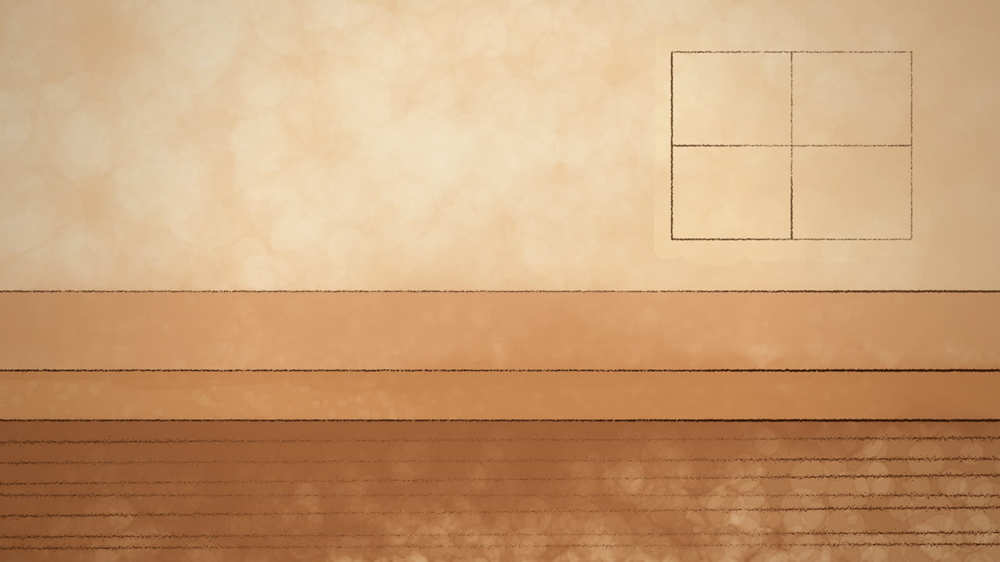
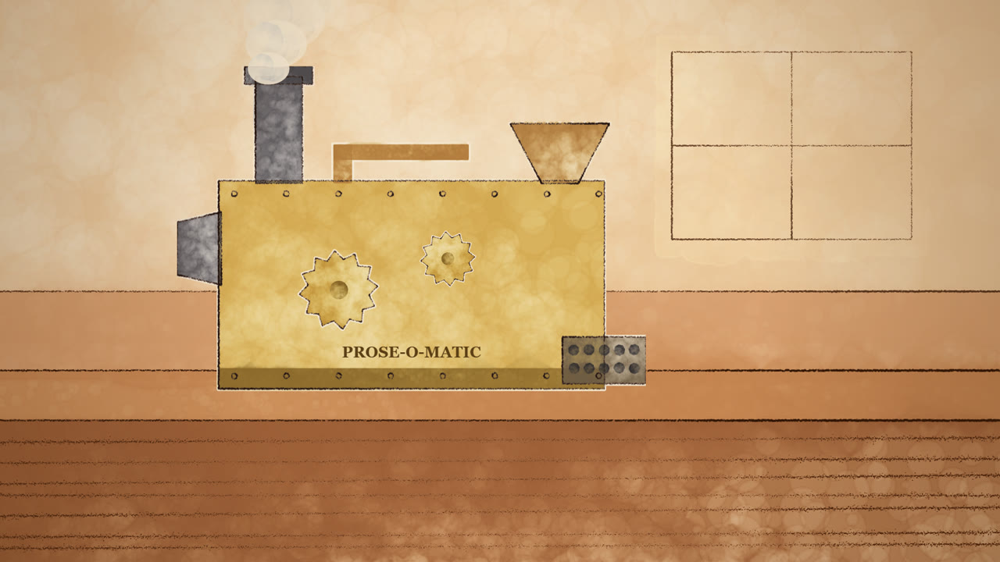
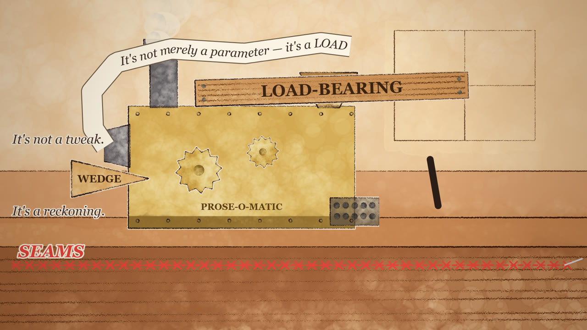
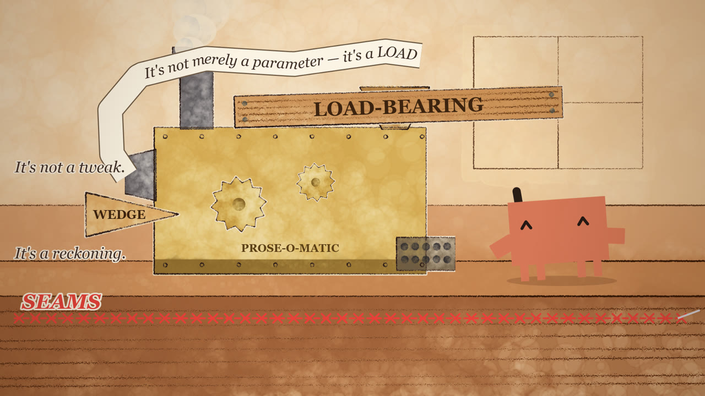
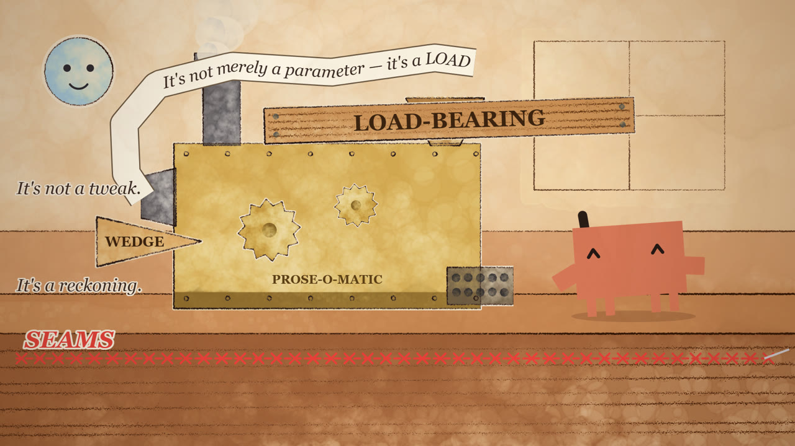
The full order inside renderFrame:
- Clear, then apply the camera shake (the sum of 4 decaying shakes: beam 4.6 s, pile 7.0 s, slam 8.05 s, card 10.5 s).
- Room sprite, then the light rays (10.0–12.35 s).
- Back props: laptop and its screen, machine and gears and smoke, PROSE switch, CONCISE button, paper pile with the paragraph.
- Gags: ribbon, wedge, SEAMS, beam, key, "...", bullets, 2 em dashes, "quietly", puff bursts. Each gag is skipped after its vacuum time.
- Clawd, then his extras (sweat, "!", bow tie, stars, speed lines), the paper strip and the stamp.
- Foreground: the avatar with glasses, magnifier and thumbs-up, the 2 speech bubbles, the system card, the vacuum, and the words flying into the vacuum.
- Outside the camera shake: the red siren wash, the grain (
multiply, 35%) and a radial vignette. - From 14.92 s: black.
9.4 How text is drawn
- All text is Canvas 2D
fillText. WebGL text in p5 needs a font file to be loaded first, so the plan kept all text off the WebGL canvas. - Georgia for prose, Consolas for the laptop. The page waits for both fonts before frame 0.
- The ribbon. The 2D canvas cannot draw text along a curve. The code builds an 11-point path, measures the arc length, and places each letter one by one, turned to the path direction. The paper strip is the same path stroked 70 px wide (dark) and then 64 px wide (cream).
- Wrapping. The canvas does not wrap text.
wrap()measures each word withmeasureTextand breaks the lines. - The CONCISE joke. The compressed paragraph is the same text and the same layout, scaled to 34%. It really has the same amount of prose.
10. The shot list as it was built
All times come from cues.json. The beat borders (0, 3, 7, 10, 13, 15 s) are yours. I set every time inside a beat.
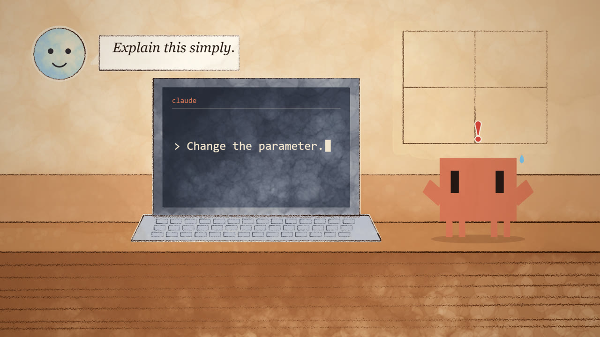
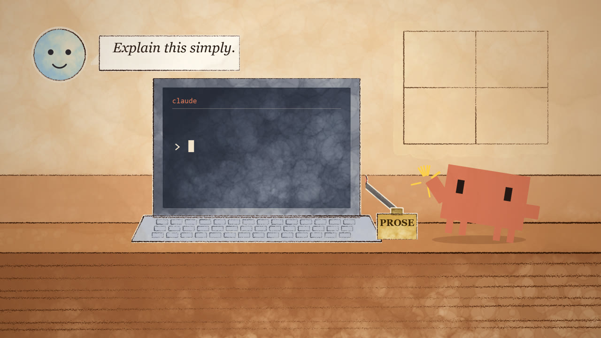

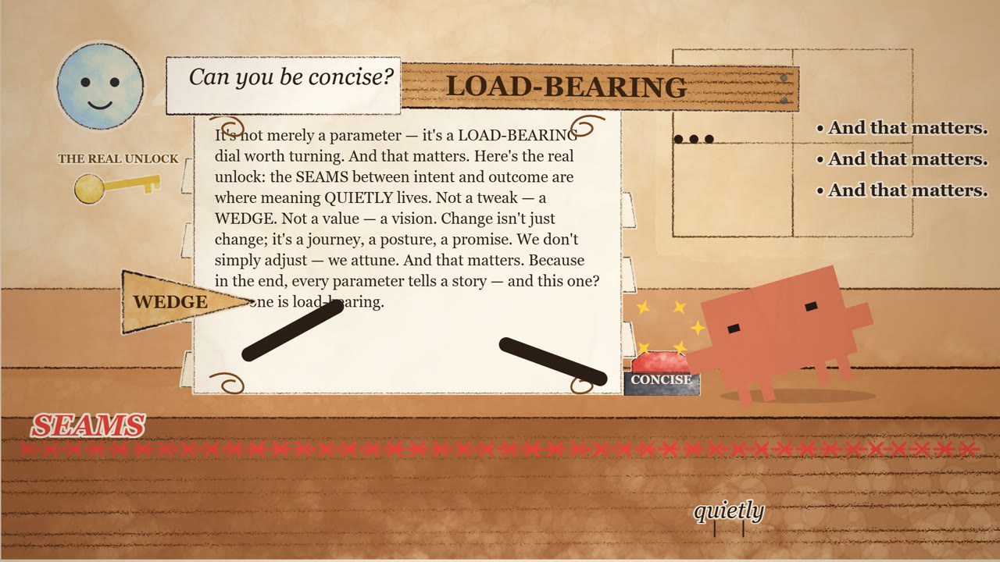
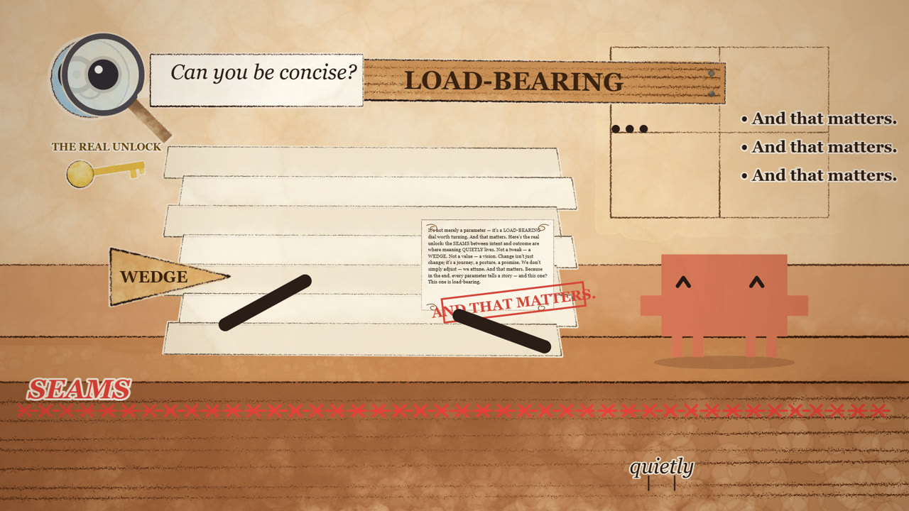
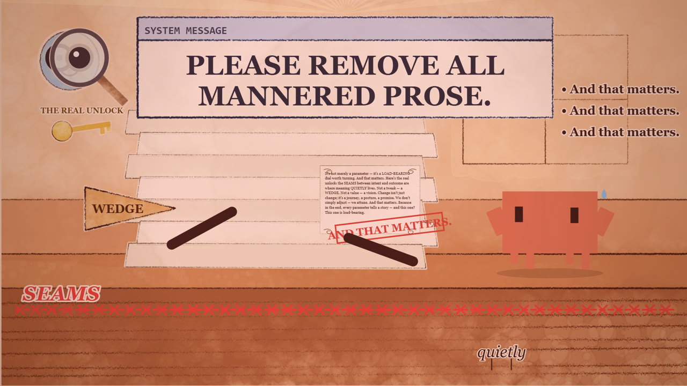
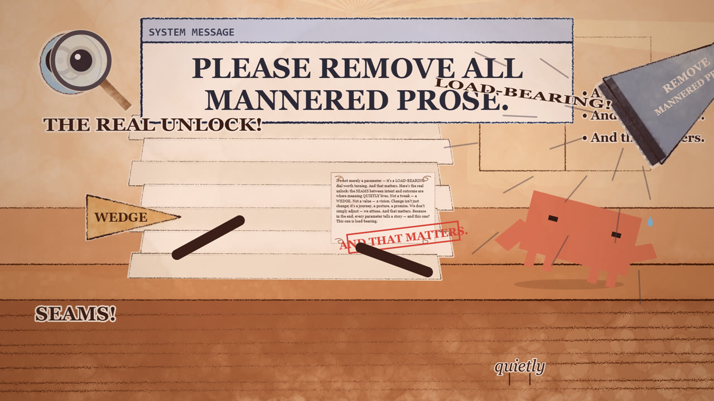
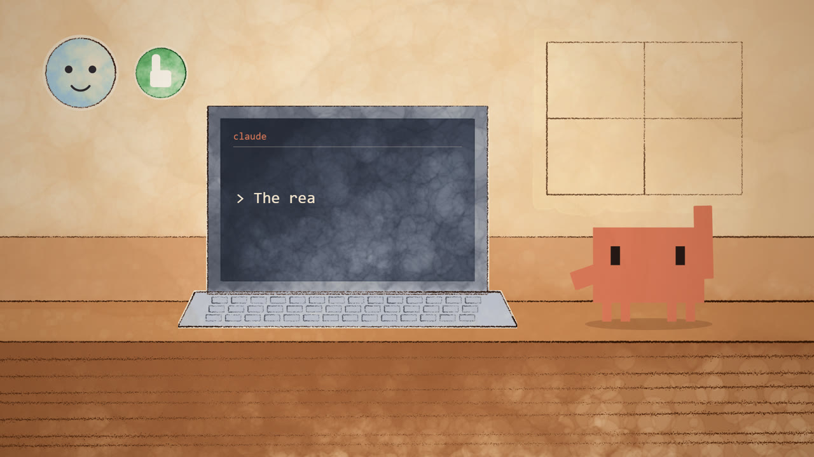
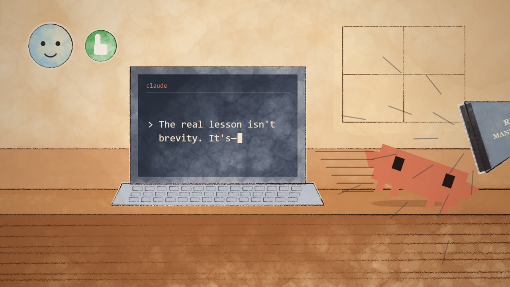
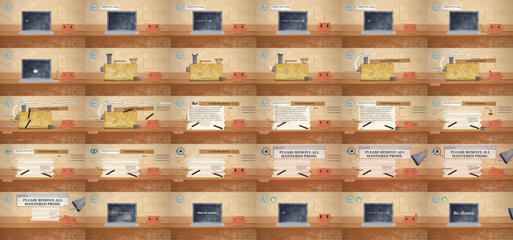
11. How the music and sound are made
11.1 Sound as numbers
A WAV file is a 44-byte header plus a list of numbers. Each number is the position of a speaker cone. This build uses 48,000 numbers each second, so 15 s is 720,000 numbers. One video frame is exactly 2,000 samples (48,000 / 24), so frame i starts at sample i × 2,000. That exact ratio makes the sync simple. score.mjs uses no audio library. It adds every sound into one Float32Array, limits the peaks, and writes 16-bit PCM itself.
11.2 The instruments
| Instrument | Recipe | Where |
|---|---|---|
| Music box | A sine at the note, plus a sine 1 octave up at 25% and 1 octave + fifth up at 8%. Decay times 0.4 / 0.15 / 0.08 s. | The "innocent" motif, and its return in beat 5. |
| Tuba | A sawtooth through a one-pole low-pass (y += 0.03·(x − y)), 20 ms attack. | The "oom" of the march, and the freeze sting. |
| Harpsichord | A sawtooth with a lighter low-pass (0.25) and a fast 0.18 s decay. | The "pah" chords and the arpeggios. |
| Choir | 5 stacked sines (C4 E4 G4 C5 E5) with 0.6% vibrato at 5.5 Hz, 0.25 s attack, 0.4 s release. | The system card at 10.0 s. |
| Noise | A seeded random generator through a low-pass. It is the base of steam, rattle, the vacuum, clicks, whooshes and cloth. | About 20 effects. |
| Sweep | A tone whose pitch glides exponentially from f0 to f1. | Pops, whooshes, the siren, the "fwip" for each word, the compressor zip. |
11.3 The vibe, section by section
The tempo is 120 beats each minute, so one beat is 0.5 s. Each storyboard beat starts on a musical beat: 0, 3, 7, 10 and 13 s are beats 0, 6, 14, 20 and 26. The music and the picture change at the same moments.
| Time | Music | Intent |
|---|---|---|
| 0.0–1.2 s | Music box C5 E5 G5 E5 C5 in eighth notes. | Innocent, small, sweet: a simple question. |
| 1.2 s | Music stops. A low tuba C2 then F#1: a tritone, the "wrong" interval. | The horror of a clear answer. |
| 1.2–3.0 s | No music, only sound effects. | Silence makes the bow tie and the finger crack funny. |
| 3.0–7.0 s | A Victorian march: oom-pah tuba on the beats, harpsichord chords on the off-beats, arpeggios in eighths. Chords C, G, F, G. At 5.5 s the arpeggios double to sixteenths. | Pompous and self-important. The faster notes match Clawd's faster typing. |
| 7.0–10.0 s | The same march at half volume. At 8.1 s a melody plays at double speed, 1 octave up, in 0.4 s. | "Same content, compressed" as a musical joke. |
| 10.0–12.3 s | March stops. A choir chord (1.0 s). | Authority from above. |
| 12.3–13.0 s | Every sample is zero. | Real silence for the stare. |
| 13.2–14.1 s | The music-box motif returns, going up to E6. | Relief and pride. |
| 14.4–14.85 s | One soft C4 + C5. | A resolved chord under "Be direct." |
11.4 Sound effects and timing
About 30 effects. Each one starts at a time from cues.json, the same number the picture uses. Sound can start on any sample, but the picture changes only every 41.7 ms. So each hit starts on the first sample of its impact frame, never before it. The plan quoted ITU-R BT.1359 from memory: people notice early sound more than late sound (about +45 ms early, −125 ms late). not verified I did not check those figures.
The effects: bubble pop, key clicks (10, then 9), backspace clicks, cloth rustle, 2 knuckle cracks, ratchet, lever clunk and spark, the transformation whoosh, gear clanks, paper swish, machine rattle at 11 Hz (the same rate as the machine shake in the picture), steam hiss every 0.3 s (the same rate as the chimney puffs), beam thud, stitch zip at 30 clicks each second, hammer "tink", boomerang whooshes every 0.35 s, tiptoe plinks every 0.1 s, "blip-blip" for each bullet, paper avalanche, message ping, slam, compressor zip (1,200 → 200 Hz), stamp thunk, 3 glasses clicks with rising pitch, card thud, a siren from 600 to 1,200 Hz twice each second (the same rate as the red wash), the vacuum roar, 11 rising "fwips" (one for each word), the send whoosh, the thumbs-up ding, a "boing", and the last vacuum with a pop.
11.5 The mix, and the one rebalance
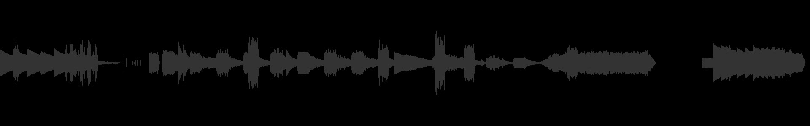
showwavespic). The gap from 12.3 to 13.0 s is true silence.- Every sample goes through
tanh(1.2·x), a soft limiter. - The whole mix is scaled so the loudest sample is −1 dBFS.
- 12.3–13.0 s and 14.92–15.0 s are set to zero, with a 10 ms fade at each edge to prevent a click.
In the first waveform, 5 long thuds (a sine gliding from 110 to 40 Hz over 0.35 s, amplitude 0.8) set the peak level, and the march was about 4× smaller. The siren and vacuum were almost invisible. I made the thuds 55% quieter and 0.18 s long, raised the siren from 0.09 to 0.13, and raised the vacuum from 0.22 to 0.7. The normalization gain went from 1.00 to 1.26.
verified Peak −1.0 dBFS, mean −14.5 dB, 720,000 samples, 12.31–12.99 s at −91 dB (that is, zero), 14.93–15.0 s at −91 dB. not verified How it sounds. I cannot hear. Nobody has listened to it yet.
12. The core problem: checking a film without watching it
I can read images. I cannot watch motion and I cannot hear. So each check turns the video into something I can read.
| Check | How | What it found in this build |
|---|---|---|
| Tiled stills | node render.mjs --stills 3.1,3.3,… renders 6–12 moments and tiles them into one image with FFmpeg (3 columns). | Reversed ribbon, a tiny wedge, a hidden hammer, a covered avatar, a vacuum label off screen, a floating lever knob, laptop text during the transformation. |
| Asset and pose sheets | --sheet assets, --sheet poses | Chalky colour, blurry glasses, a wrong face, a raised arm that did not show. |
| Colour check | The pose sheet measures the mean colour of a 40×40 area of Clawd's body. | 215,119,87. Exact. |
| Motion check | --motion evaluates the pose for all 360 frames and lists each jump larger than a limit (40 px, 0.15 scale, 12° lean, 45° arm). | About 30 jumps at first. After the arm blend and the landing fix, 5 remain. All 5 are deliberate impacts. |
| Contact sheet | FFmpeg select='not(mod(n,12))',tile=6x5 on the MP4. | The story flow. |
| Format | ffprobe with -count_frames. | 360 frames, 24/1, yuv420p, bt709, video and audio both 15.000 s. |
| Audio shape | volumedetect on the whole file and on the silent parts, plus showwavespic. | The thud-heavy mix. |
| Determinism | cmp of frame 0 from two renders. | Identical. |
The motion-check limits are my own choice. They are not a standard. Speed, rhythm, comic timing and reading time can only be judged by a person who watches the video.
13. What went wrong, and the fixes
13.1 Errors with error text
- FFmpeg glob. The first try to tile stills failed:
[image2 @ 000001ff4e768400] Pattern type 'glob' was selected but globbing is not supported by this libavformat build Error opening input file t_*.png.
The Windows "essentials" build of FFmpeg has no glob support. Fix: write alist.txtfile and use the concat demuxer (-f concat -safe 0). - A newline inside a JavaScript string (twice). I edited
render.mjswith a Python script inside a Bash heredoc. The'\n'in the JavaScript became a real line break:SyntaxError: missing ) after argument list (render.mjs:66) SyntaxError: Invalid or unexpected token (render.mjs:56)
The same mistake happened twice. Both were fixed with a direct text edit. Rule: do not write escape sequences through two layers of quoting. - 404 in every render.
[page] Failed to load resource: the server responded with a status of 404 (Not Found). I added URL logging. Onlyfavicon.icois missing. This has no effect on the result.
13.2 Visual errors found in stills, and the fixes
| # | What I saw | Cause | Fix |
|---|---|---|---|
| 1 | Test rectangle nearly white at one side | Pigment mixes with the white canvas | Paint on paper colour #f3e6cf (advisor) |
| 2 | All sprites pale and patchy | Watercolor fill alone is thin | Flat brush.wash at 170 under each fill |
| 3 | Outlines too thin | scaleBrushes(3) is for a 600×600 canvas | scaleBrushes(6) |
| 4 | Avatar mouth drawn as a line joining the eyes | brush.arc angle convention not as I expected | Face drawn in 2D |
| 5 | Strong glasses blurry and grey | The 'marker' brush at weight 3 is very soft | Glasses and rims drawn in 2D |
| 6 | Ribbon text reversed ("retemarap a ylerem ton s'tI") | First letter placed at the moving head | Text fixed on the strip, reading from the chute outward, like a scroll that unrolls |
| 7 | Ribbon over the avatar | Path curled through the top-left | New path that rises at x = 300 |
| 8 | Wedge tiny, hammer off screen | Scale 0.6 and the end position too far left | Scale 1.2, end at x = 300, hammer eases in |
| 9 | "quietly" too small to read | 30 px text | 44 px, longer legs |
| 10 | Key tag and "..." on top of the paragraph and beam | Positions | Moved to the left and to the window |
| 11 | Magnifier hid the face | The lens sprite is opaque | Lens at 85% alpha, centred on the eye, big eye drawn on top |
| 12 | Vacuum and its label mostly off screen | Horizontal nozzle at the right edge | Nozzle tilted −0.6 rad (beat 4) and −0.3 rad (beat 5) |
| 13 | Clawd huge when sucked away | Stretch factor 1.5 + 0.6 | Stretch, then shrink to 15% |
| 14 | CONCISE label hidden behind Clawd | Clawd at x = 1480 | Clawd at x = 1530 |
| 15 | Raised "finger" did not show | The nub ended below the top of the head | Extra length 95 px |
| 16 | Bubbly grain across the whole frame | Grain at 50% | 35% |
| 17 | Deleted line visible again during the transformation | Screen logic showed the line from 3.0 s | No line from 3.0 s until the reveal |
| 18 | Red lever knob floating on the desk at 3.55 s | The lever sticks up out of the sinking base | Lever fades as the switch sinks |
| 19 | Laptop revealed while the pile still covered it | Pile sucked away too late | Last vacuum cue 11.90 → 11.86 s |
| 20 | About 20 arm jumps between two frames | Pose blocks start with new arm values | 3-frame follow-through blend |
| 21 | Lean jumps 17.4° at 12.083 s, in the quietest moment | The landing block did not reset lean smoothly | Lean eases back over 0.12 s. Squash eased. (Advisor found it in my own motion log.) |
13.3 Near-misses caught before they ran
- A global function
drawSheet(the paragraph) had the same name aswindow.drawSheet(the check sheets). Global functions in a browser script are properties ofwindow, so one would have replaced the other. I renamed the paragraph function todrawParagraphbefore the first run. - A nonsense expression in the delete logic,
typed(...) && LINE1.slice(...), was replaced before the first run. - Seeding with
brush.seed(section 7.1).
14. Where the result differs from the storyboard
| Storyboard | Result | Why |
|---|---|---|
| Clawd sits at the laptop | Stands beside it | A pixel block cannot sit. |
| A tiny user prompt appears | A speech bubble from the avatar | Readable at 44 px. |
| The laptop transforms into a factory | The laptop shrinks in smoke, the machine pops in | A shape morph between two painted images is much more work. |
| Three identical bullet points | "• And that matters." ×3 | My text. |
| QUIETLY tiptoes past | Walks 5.7–6.9 s and stops at x = 1330 | It must still be there when the vacuum takes it at 11.45 s. The plan said 5.8–6.6 s. |
| The prose buries the laptop | A paper pile drops over the machine | — |
| Clawd stamps "AND THAT MATTERS." | A stamp flies from Clawd to the paper and back | The paper is about 450 px from Clawd. |
| Magnifying glass | Magnifier over the right eye, the eye becomes huge | — |
| Vacuum takes metaphors, flourishes, dramatic pauses, third bullet | Flying labels: "—", "~ flourishes ~", "...", "• third bullet" | Abstract ideas need a visible object. |
| Bullets 1 and 2 | Leave with the pile | Only the third bullet is named. |
| Clawd sits on the pile, proud | Stands beside it, proud | The plan's staging kept Clawd in one place. |
Reading time: "Be direct." is on screen for 0.52 s (it fades in over 0.1 s). "The real lesson isn't brevity. It's—" types over 0.45 s. A common subtitle rule of thumb is 15–20 characters each second. not verified as a standard. At that rate, 36 characters need about 2 s. The joke still works because the line is cut off. You kept 15 s, so I did not extend it.
15. Tools used
| Tool | Version | What it did in this build |
|---|---|---|
| Claude Code, Opus 5.5 | v2.1.281 | Wrote all code, ran all commands, read every still and sheet as an image. |
| Node.js | v22.22.0 | Ran render.mjs and score.mjs. |
| p5.js | 2.2.3 (LGPL-2.1) | Gives p5.brush its WebGL canvas and the draw() loop. |
| p5.brush | 2.2.3 (MIT) | Painted the 23 sprites: wash, fill, fillBleed, fillTexture, rect, circle, polygon, line, set('pen'), set('2B'). |
| Canvas 2D API | Chrome built-in | Everything that moves: composition, transforms, text, effects. |
| Google Chrome, headless | your installed copy | Ran the scene on the GPU through ANGLE/D3D11. |
| puppeteer-core | 24.43.1 (Apache-2.0) | Opened the page, called renderFrame(i), took 360 screenshots with deviceScaleFactor: 1. |
Node http | built-in | Served the folder on port 8765, because Chrome blocks fetch of cues.json from file://. |
| FFmpeg | 7.1.1 essentials | PNG → H.264 (-crf 16 -preset slow -pix_fmt yuv420p, bt709 tags, +faststart). WAV → AAC 192k. Cut to 15 s. Contact sheets, tiles, waveform, volumedetect, JPG copies for this document. |
| ffprobe | 7.1.1 | Counted frames and measured durations. |
| Python | 3.13.5 | Used only to edit files and to extract the plan text. Not part of the project. |
Not used: Pixabay (no audio API), Higgsfield (your README says "no higgs"), the hyperframes skill (you chose p5.js), any AI image, video or audio generator, any video editor.
16. Agents, advisor, and the rules that shaped the work
- No subagents. All the work was done in the main session. Parallel agents would not help, because each step depended on looking at the output of the step before.
- Advisor (Fable 5.1), session 3, 2 calls. Call 1, after phase 1: paint on paper colour, use a flat Clawd fill plus a measured texture, log 404 URLs, scale brushes up, check determinism, render stills for each beat, check audio with numbers, keep 15 s without asking, carry the grid risk into the report. Call 2, before "done": read the final contact sheet (I had not), fix the 12.083 s lean jump from my own motion log, remove a wrong count ("9 visual errors") from
TASKS.mdand list the fixes instead, and send you the files. I applied every item. Session 1 had 1 advisor call, and session 2 had 2 or 3. reconstructed - Your standing instructions: ASD-STE100 writing, plain language with full substance, precise phrasing (no rhetorical claims), dark HTML (this page), "finish, or say what you left".
- Hooks: one hook pushed toward the smallest change. Another asked for a finish line, a
TASKS.mdchecklist and the "Blocked on me / Changed / Found" report. - Deliberate additions beyond the plan:
paint.jsas a separate file, the--motion,--sheetand--stillsmodes with tiling, the arm follow-through. Each one was added because a check needed it.
17. Costs, limits and time
- Money: no paid API and no paid service. The work ran on a Claude subscription plan.
- Context: by the end of the build, session 3 used about 298,000 context tokens (a hook reported this number). Each turn in a context this large costs 3× or more than a turn at the start of a session.
- Render time: the phase 1 test scene took 120 ms per frame. The full scene took 814–1,018 ms per frame, so one full render took 5–6 minutes. I did not measure how much of each frame is drawing and how much is PNG screenshot encoding.
- Other times: sprite painting 7.5–11.6 s for each render,
score.mjs0.7 s, session 3 build about 70 minutes. - Disk: 360 PNG frames existed during each render and were then deleted.
node_modulesis 96 MB. The MP4 is 8.7 MB, andscore.wavis 1.44 MB.
18. Verification: what was checked and what was not
| Claim | Status | Evidence |
|---|---|---|
| 360 frames, 24/1 fps, 1920×1080, yuv420p, bt709 | verified | ffprobe nb_read_frames=360 |
| Video and audio exactly 15.000 s | verified | ffprobe, both streams |
| Clawd colour #D77757 | verified | mean 215,119,87 |
| Renders repeat exactly | verified | cmp of frame 0 |
| Silence 12.3–13.0 s | verified | volumedetect −91 dB |
| Every storyboard beat is visible | verified as stills | contact sheet and about 70 stills |
| Motion is smooth and the timing is funny | not verified | I cannot watch video. Only the motion check numbers exist. |
| The music and sound are good | not verified | I cannot hear. |
| Clawd's shape matches Claude Code | not verified | Section 8.1: the evidence disagrees. |
| The MP4 plays in QuickTime and on phones | not verified | The format rules for that (yuv420p, even size, faststart) are met, but I did not test a player. |
| The text looks the same on another computer | not verified | It uses the Georgia and Consolas fonts of the rendering machine. |
19. Unknown unknowns: questions you did not know to ask
Each item is a question that a person who directs this kind of work usually does not think to ask. Each has an answer.
About what the model can and cannot do
Did the model watch the video?
No. It read about 70 single frames and 3 contact sheets as images. It judged motion only from the numbers of the motion check. It has never seen Clawd move.
Did the model hear the music?
No. The first person to hear the soundtrack is you. The music is designed from music theory (tempo, chords, instruments) and checked as a waveform and as levels. Plan for at least one round of sound changes.
Is any part of this made by an image, video or music AI?
No. Every pixel comes from a drawing command in the source, and every sample comes from a formula in score.mjs. The only randomness is seeded, so it repeats.
How much of this did the model decide, and how much did you decide?
You decided: the story, the 5 beat borders, 15 s, p5.js + p5.brush, all-code audio, writing the engine from scratch, and one run without stops. The model decided: every position, every time inside a beat, all the extra prose, the colours, the instruments, the chords and the order of the vacuum words.
About the pictures
Is the watercolor animated?
No. The watercolor texture is painted one time and does not change. That is on purpose: painting it again for each frame would make it flicker. What moves is the position, turn and size of the painted images.
Why is Clawd flat, when the room is watercolor?
Clawd is a pixel character, and its colour must be exact. A watercolor fill changes the colour and softens the edges. So the body is flat #D77757 with a light texture in soft-light mode, which keeps the mean colour exact. The grain layer over the whole frame also covers Clawd, so it sits in the same paper world.
Why does the text look sharp and digital?
All text is drawn with Canvas 2D in system fonts, not painted with p5.brush. Painted text would be hard to read, and WebGL text needs font files.
Does the result depend on my computer?
Yes, in 3 ways: the fonts (Georgia, Consolas), the Chrome path in render.mjs, and the FFmpeg path. The GPU affects only the speed.
About the process
Was the first render the final one?
No. There were 5 full renders and 9 still passes in session 3. About 21 visual problems were found and fixed. Most time went into check-and-fix, not into first drafts.
Why were all 5 beats written before any stills were read, when the plan said one beat at a time?
That is a deviation from the plan. I wrote the timeline code for all 5 beats in one pass, because the beats share helpers and layers. Then I read stills beat by beat and fixed each beat before I moved on. The review happened for each beat. The writing did not.
What did the checkpoints you skipped (option A) cost?
The asset sheet, the pose sheet and the score were not approved by you before the build continued. If you do not like a prop, a pose or the music, it must be changed now, and the whole video must be rendered again (5–6 minutes). No step before it has to change.
How do I change something small?
Timing: change one number in cues.json, then run node score.mjs and node render.mjs. The picture and the sound move together. Position or size: one number in scene.js. Clawd's shape: the grid constants at the top of clawd.js. Colour: the COL palette at the top of scene.js. To check one moment without a full render: node render.mjs --stills 8.6.
Can someone else run it?
Yes, with Node 22, Chrome and FFmpeg, after changing the 2 paths at the top of render.mjs. The README has the 3 commands.
About accuracy
Is this really how Clawd looks?
The colour is confirmed from the Claude Code binary. The shape is not confirmed. See section 8.1: the grid I used, the logo text saved from your terminal, and the reference video disagree.
Which words on screen come from you, and which from the model?
From your storyboard: "Explain this simply.", "Change the parameter.", "PROSE", the ribbon sentence, LOAD-BEARING, SEAMS, WEDGE, QUIETLY, "Can you be concise?", "CONCISE", "AND THAT MATTERS.", "PLEASE REMOVE ALL MANNERED PROSE.", THE REAL UNLOCK, "The real lesson isn't brevity. It's—", "REMOVE MANNERED PROSE", "Be direct.". From the model: "It's not a tweak." / "It's a reckoning.", the 470-character paragraph, "And that matters." bullets, "PROSE-O-MATIC", "SYSTEM MESSAGE", "claude", "~ flourishes ~", "• third bullet".
Is the output legal to share?
The libraries are LGPL-2.1 (p5), MIT (p5.brush) and Apache-2.0 (puppeteer-core). The video contains no library code. Clawd is Anthropic's mascot. I did not check the rules for using the mascot. not verified
About the files
What was deleted?
The 360 PNG frames after each render, the stills folder, the intermediate video.mp4, and the session 1–2 scratchpad smoke test (lost at /clear; plan-smoke-frame.png is the record). Nothing in your project folder was deleted.
What was saved for the next session?
HANDOFF.md (state, the list of fixes, the next task), TASKS.md (checklist), clawd-prose/README.md. No new memory file was written in session 3. The agent's memory files about FFmpeg and Clawd are from sessions 1–2.
Where do the images on this page come from?
The folder journey/. The layer images and beat stills were made for this document by a script in the session scratchpad (layers.mjs). The script is not kept, because it is not part of the project. It turned off groups of drawing functions and rendered frame 132 again.
20. Where things stand
- Done:
clawd-prose/out/clawd-prose.mp4and the runnable source inclawd-prose/. - Blocked on you:
- Watch the video and listen to it. Send notes on timing, readability and sound.
- Send a screenshot of the Clawd logo in your terminal, so I can settle grid A or grid B.
- Decide whether reading time is worth more than the 15-second limit. Options: keep 15 s; move 0.3 s from the silence to "Be direct."; or extend beat 5 by 1–2 s.
- Possible next steps: a sound pass after you listen; the grid fix; package the pipeline as a reusable skill, as the reference video did.